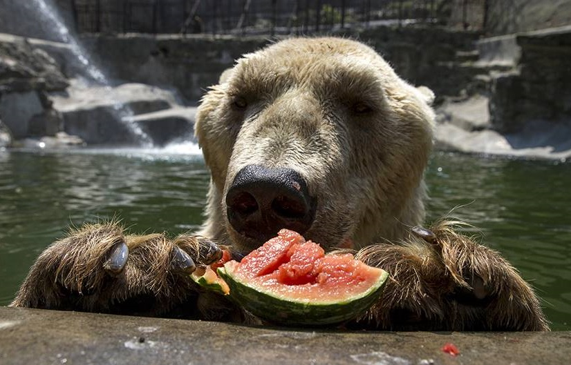

Mačke
Mačke su familija sisara iz reda zveri, koja obuhvata 41 savremenu vrstu. Pojedine vrste su veoma poznate kao izvanredni predatori – tigar, puma, ris, lav, a u ovu familiju spada i domestifikovana vrsta mačka, čest kućni ljubimac. U Beo zoo vrtu možete upoznati mnoge predstavnike familije mačaka, a među njima su I bengalski beli tigar, serval, gepard, afrički leopard, kuna...
Kopitari
Kopitari su grupa sisara kojima je zajednička karakteristika unguligradno kretanje što je kretanje pri kome se životinje na tlo oslanjaju vrhovima prstiju i delimično kandžama. Većina predstavnika se hrani biljnom hranom i ima veliki značaj za čoveka - goveda, konji, kamile, svinje, ovce i koze, ali tu takođe spadaju žirafe, zebre, jeleni, bizoni… U Vrtu Dobre Nade možete videti mnoge predstavnike ove grupe, a pažnju će vam sigurno privući I Mrežasta žirafa koja već godinama donosi osmehe na lica naših posetilaca.
Medvedi
Medvedi su porodica krupnih sisara iz reda zveri i žive u različitim staništima, od tropskih do polarnih i od planinskih do ravničarskih. Od staništa zavisi način ishrane medveda, mada je većina vrsta omnivorna. Najveći broj vrsta medveda se hrani korenjem, bobicama, ribom. Kod nas se možete upoznati sa polarnim medvedom koji obožava da pliva u svom velikom staništu, ali I sa tibetanskim ogrličarem i mrkim medvedima.
Primati

Primati su grupa životinja koja obuhvata ljude, majmune I lemure. Svi primati imaju pet prstiju i primitivnu građu tela, kao i nokte na prstima. Suprotni palčevi su takođe karakteristična osobina primata, ali nisu ograničeni na ovaj red. U čovekolike majmune spadaju šimpanze, a u Beo zoo vrtu, pamtimo jendog veoma ljupkog stanovnika, šimpanzu Samija, čija statua se I danas nalazi u okviru Vrta, a njegovi braća I sestre će Vam svojim nestašlucima ukrasti srca.
Surlaši

Surlaši su red krupnih kopnenih sisara. Ovaj red je dobio ime po svom najupadljivijijem svojstvu – surli. Surlaši se ne razlikuju od drugih kopnenih sisara samo svojom upadljivom osobinom surlom, nego i neobičnim zubima koji se nazivaju kljove, i najčešće ogromnim razmerima svog tela. Različite porodice surlaša su nekada bile vrlo rasprostranjene na Zemlji, ali su do današnjeg dana opstali samo slonovi i to na vrlo ograničenom životnom prostoru. Od tri postojeće vrste surlaša koji žive danas – afrički slon, šumski slon I azijski slon, u Beo zoo vrtu možete upoznati veoma druželjubivog azijskog slona.
Ptice

Ptice su klasa dvonožnih, toplokrvnih kičmenjaka koji polažu jaja. Familija ptica je mnogo velika I rasprostranjena, a njihove predstavnike možete upoznati I u našem Vrtu. Tokom obilaska u mogućnosti ste da obiđete mnoge vrste medju kojima su – papagaj patagonac, crnovrati arakari, američki flamingo, Lidbiterov kljunorog, žutoćubi kakadu, plavožuta ara, rode, fazani, labudovi I mnogi drugi.
Gmizavci

Gmizavci, poznati I pod nazivom reptili su životinjska klasa koja se sastoji od kornjača, krokodila, zmija, vodenih guštera, guštera, tuatara, i njihovih izumrlih srodnika. Za ovu vrstu je karakteristično to što su oni upravo vrtsa koja je prvi put u potpunosti napustila vodu da pređe na kopno zahvaljujući razvijanju jaja sa opnom. U našem objektu za reptile mogu se videti Misisipi aligator, kubanski krokodil, nilski varan, belogrli varan, zelena anakonda, zlatni burmanski piton, zmijski car, zeleni arboreačni piton…